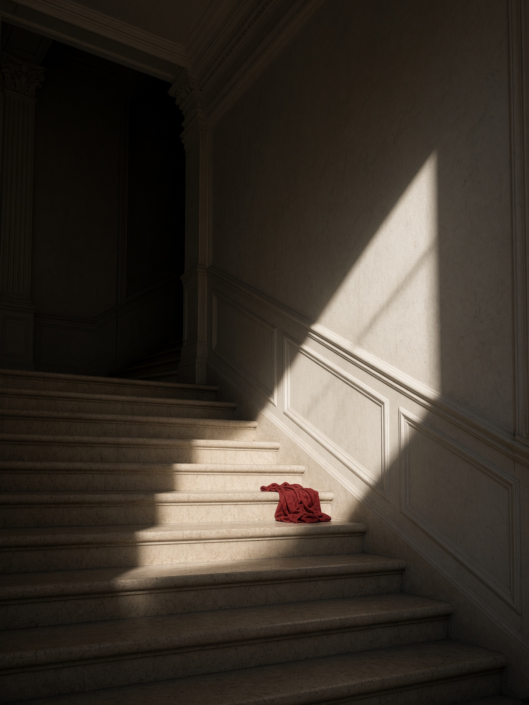

Mylène Farmer firma i propri testi dal 1984 e li mette, quasi sempre, dentro una scena più grande della canzone. Il nome in copertina non è quello di nascita. Mylène Jeanne Gautier nasce il 12 settembre 1961 a Pierrefonds, in Québec, e cresce in Francia. Le interviste restano rare. I dischi non seguono il calendario dell'industria: arrivano quando il lavoro è chiuso, non quando il trimestre lo chiede.

Il primo tempo è quello scritto con Laurent Boutonnat, immagini comprese. «Maman a tort» esce nel 1984. «Cendres de lune» nel 1986, «Ainsi soit je...» nel 1988, «L'autre...» nel 1991. Da «Désenchantée» in poi le sale diventano stadi e residenze: Bercy, poi i tour che portano il titolo di un disco — Mylenium, Avant que l'ombre, N°5 on Tour, Timeless. I clip, fin dall'inizio, durano quanto un cortometraggio. Non sono un contorno promozionale.
Il secondo tempo allarga i compositori senza cambiare la firma dei testi. «Anamorphosée», 1995, si registra a Los Angeles e sposta le chitarre avanti. «Bleu noir», 2010, mette sullo stesso disco Moby, RedOne e Archive. «Interstellaires», 2015, include «Stolen Car», cantata con Sting. «Désobéissance», 28 settembre 2018, è pubblicato da Sony dopo una lunga stagione Polydor; dentro c'è «N'oublie pas», con LP.

Il terzo tempo è quello che si sta ascoltando adesso, o che si sta per ascoltare. «L'Emprise» esce il 25 novembre 2022: Woodkid ne firma la maggior parte delle musiche, con brani anche di Moby, Archive e AaRON. Nel 2023 la tournée Nevermore riempie di nuovo le grandi venue; il live esce nel 2024. Il 13 maggio 2025, a Cannes, canta «Confession», inedito pensato come omaggio a David Lynch.
Il 30 ottobre 2026 esce «Égrégore», tredicesimo album in studio, su Stuffed Monkey con Sony. I brani già pubblici sono «C'est à qui le tour», «Des lols et des quoi» e «Confession». Il 7 ottobre 2026 DJ Snake annuncia una collaborazione: il titolo non è stato pubblicato. Il 27 ottobre un film di circa 65 minuti, con più registi, viene proiettato per una sera. Non è un concerto. Al 14 ottobre 2026 nessuna data di tour risulta annunciata.
Il management è Hashtag NP, società fondata da Pascal Nègre insieme a Live Nation. Le cifre di vendita che circolano in stampa stanno sopra i 30 milioni di dischi: il numero esatto cambia secondo la fonte, e qui non viene arrotondato a uno slogan. Si ascolta il disco. Il resto è scena, e la scena ha le sue date, quando ci sono.